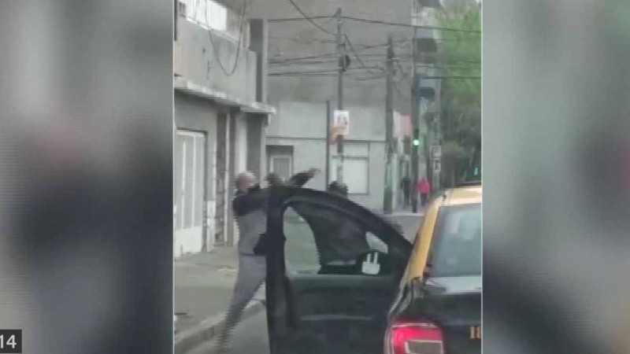

Video: dos taxistas rosarinos discutieron, se agarraron a trompadas y uno de ellos sacó un palo y derribó al otro | Rosario3INFORMACION GENERALHace 7 horas
Video: dos taxistas rosarinos discutieron, se agarraron a trompadas y uno de ellos sacó un palo y derribó al otro
Testigos del enfrentamiento pudieron grabar la brutal escena. Uno de los dos
conductores sacó un palo de madera y golpeó al otro que debió ser atendido por
médicos. Desde la Municipalidad anunciaron que serán citados y sancionados
Por Rosario 3 F T W M C

1 de 1 | La feroz pelea de taxistas en plena calle. Dos taxistas rosarinos se pelearon en la calle y en medio de la discusión, uno apaleó al
otro al punto que debió ser atendido por un servicio de urgencia médica. La brutal
discusión pudo ser registrada por testigos y se constituyó en un material importante para
determinar posibles sanciones de parte de la Municipalidad de Rosario.
Dos hombres corpulentos se gritan mutamente en medio de la calle, más precisamente, sobre la
bicisenda de Corrientes al 2300. Son las 8.30, y la tranquilidad que suele resistir hasta entrada
la mañana se quiebra cuando la pelea se torna más y más violenta. Ambos son taxistas, se
cree que uno es titular y el otro es un chofer de servicio público aunque no hay certezas. Alguien
se anima y activa la cámara del celular. El video es reproducido este mediodía en De 12 a 14 (El
Tres).
Pelea entre taxistas terminó con un herido y la policía Uno de los taxistas hace ademanes de “ir a las manos”. Es el mismo que en otra escena
toma un palo de madera y le asesta un golpe seco a su contricante, al costado. Después lo
empuja y cae al piso sentado. Más tarde, recibirá atención médica. De acuerdo a algunos
testomonios, la gresca se produjo por una discusión relacionada a un pasajero, aunque no hay
versiones oficiales.
Desde la Secretaría de Transporte y Movilidad municipal, Ezequiel Escobar, confirmó que
actuaron de oficio e idenificaron a los protagonistas:“Serán citados para que hagan su
descargo y serán sancionados”, sostuvo. Según indicó, podrían ser apercibidos o la
suspensión temporal, dependiendo de la existencia de antecedentes.
El funcionario advirtió que los trabajadores reciben capacitaciones en diversidad e inclusión
“para que puedan comprender cosas esenciales para el desarrollo de un serviciopúblico” y
lamentó que actitudes de este tipo “mancha la actividad de los taxistas”. Ciudad